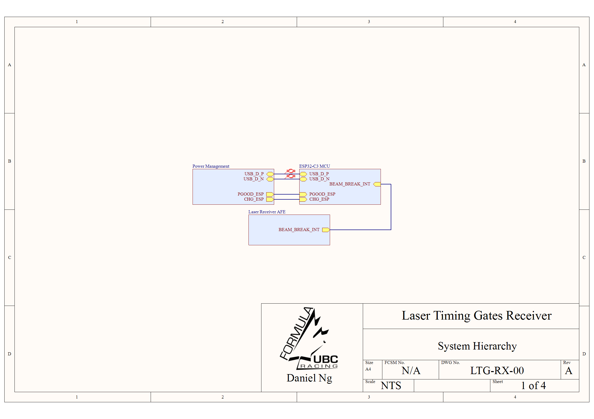
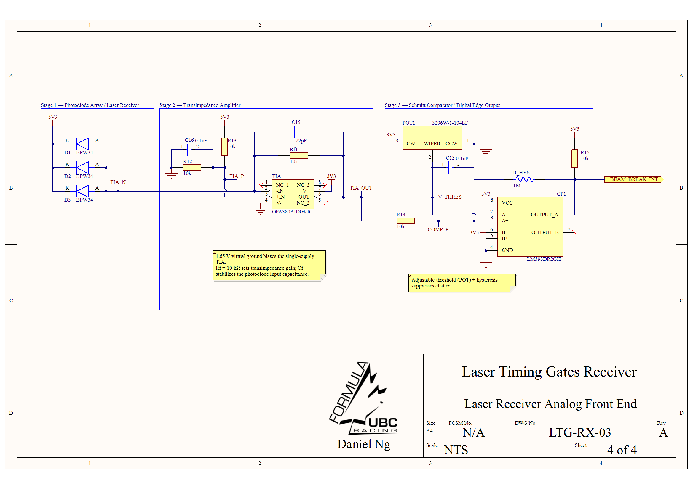
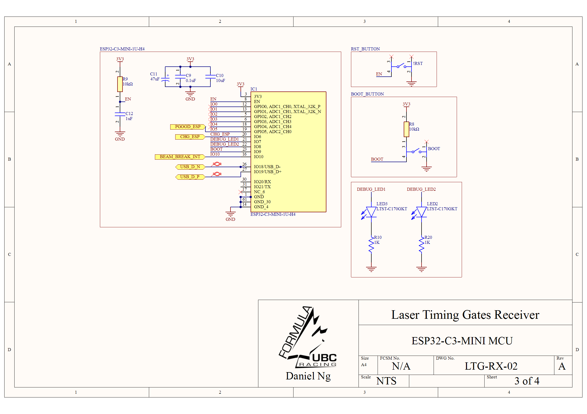

- System Architecture: Designed a modular receiver PCB for laser-based lap timing, separating USB-C power, ESP32 control, and optical analog front-end circuitry across hierarchical schematic sheets.
- Power Management: Implemented a 1S LiPo power subsystem using a BQ24074 charger/PowerPath IC, USB-C input, battery temperature-sense option, and TPS63001 buck-boost regulation for a stable 3.3 V system rail.
- Optical Front End: Built a BPW34 photodiode array feeding an OPA380 transimpedance amplifier, using a 1.65 V virtual ground and feedback compensation to improve single-supply stability.
- Digital Edge Detection: Added an adjustable LM393 Schmitt comparator with hysteresis to convert noisy photodiode signals into clean ESP32 interrupt edges for beam-break timing.
- Clock Synchronization: Architected a master/client ESP-NOW timebase that converts local beam-break timestamps into a shared master-time domain using periodic offset calibration and RTT latency compensation.
- PCB Layout: Floorplanned a 4-layer board with noisy power-switching kept away from the quiet optical receiver, short TIA input routing, USB-C ESD protection near the connector, and u.FL antenna clearance for 2.4 GHz communication.
Design Requirements
Optical Timing
- Detect laser beam interruptions during vehicle test sessions.
- Generate clean 3.3 V digital edges for ESP32 interrupt timestamping.
- Support threshold tuning for changing ambient-light conditions.
Portable Power
- Operate from USB-C during setup/debug or from a 1S LiPo in the field.
- Provide battery charging, charger-status outputs, and optional thermistor sensing.
- Regulate a stable 3.3 V rail for the MCU, analog front end, and indicators.
Distributed Timing
- Synchronize separate start/finish gates before calculating lap time.
- Record beam-break events with microsecond-resolution firmware timestamps.
- Correct for oscillator drift using periodic timestamp exchanges between nodes.
Key Design Decisions
| Subsystem | Implementation |
|---|---|
| Optical receiver | Three BPW34 photodiodes increase the effective laser capture area while feeding one transimpedance stage. |
| Current-to-voltage stage | OPA380 TIA with 10 kΩ feedback and compensation capacitor converts photodiode current into a measurable voltage. |
| Digital edge output | LM393 comparator with adjustable threshold and hysteresis suppresses chatter before the signal reaches the ESP32. |
| Power path | BQ24074 manages USB-C input, 1S LiPo charging, PowerPath system output, and status pins for the MCU. |
| 3.3 V rail | TPS63001 buck-boost keeps the ESP32 and analog circuitry powered across the LiPo discharge range. |
| Clock synchronization | Master/client ESP-NOW timestamp exchange estimates clock offset before lap-time calculation; local beam-break events are converted into the master time domain with RTT compensation. |
| Wireless controller | ESP32-C3-MINI-1U provides USB programming, GPIO interrupt capture, and an external u.FL antenna path for 2.4 GHz communication. |
Firmware Clock Synchronization
Master-Time Alignment
- Designates one gate as the timing master and calibrates the other node against it before a run.
- Computes a clock offset from exchanged ESP-NOW timestamps so both gates report events in one timebase.
- Uses microsecond-resolution timestamps so lap time is calculated from synchronized beam-break events, not packet arrival time.
Drift & Latency Control
- Re-syncs periodically to reduce crystal drift from temperature and supply variation.
- Applies round-trip-time compensation to estimate one-way wireless latency.
- Plans median filtering across sync packets to reject Wi-Fi/ESP-NOW timing outliers.
Layout Risk Controls
Noise Isolation
- Kept TPS63001 inductor and switch-node routing away from the OPA380 TIA input.
- Placed the photodiode array directly beside the TIA to minimize the sensitive input path.
- Used a 4-layer stackup plan with a continuous internal ground reference.
Interface Protection
- Placed USB ESD protection directly behind the USB-C connector.
- Kept the buck-boost cluster compact with local input/output capacitors.
- Reserved clearance around the ESP32-C3 u.FL connector and external antenna cable path.
Bring-Up / Verification Plan
- Measure 3.3 V rail ripple under ESP32 wireless transmit load.
- Confirm BQ24074 PGOOD, CHG, and thermistor/TS behavior during USB and battery operation.
- Measure TIA output swing for laser-on and beam-blocked conditions.
- Tune comparator threshold and hysteresis for stable beam-break output without chatter.
- Validate ESP32 interrupt timestamp jitter by toggling a debug GPIO and checking timing on an oscilloscope.
- Measure start/finish clock offset over repeated ESP-NOW sync bursts and verify that RTT compensation reduces lap-time error.
Schematics & 3D Model





Firmware Snippet // Clock Sync + Beam-Break Capture
static volatile int64_t clock_offset_us = 0;
static volatile int64_t last_beam_break_us = 0;
static volatile bool beam_break_event = false;
int64_t master_time_now_us(void)
{
return esp_timer_get_time() + clock_offset_us;
}
void on_sync_packet(const SyncPacket *pkt)
{
int64_t t_client_rx_us = esp_timer_get_time();
int64_t one_way_us = pkt->round_trip_us / 2;
clock_offset_us =
(pkt->master_tx_us + one_way_us) - t_client_rx_us;
}
void IRAM_ATTR beam_break_isr(void)
{
last_beam_break_us = master_time_now_us();
beam_break_event = true;
}
void process_lap_event(void)
{
if (!beam_break_event) return;
beam_break_event = false;
send_timestamp_to_master(last_beam_break_us);
}